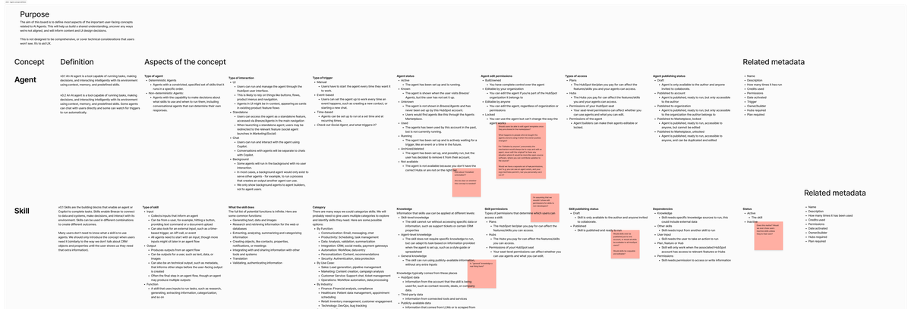
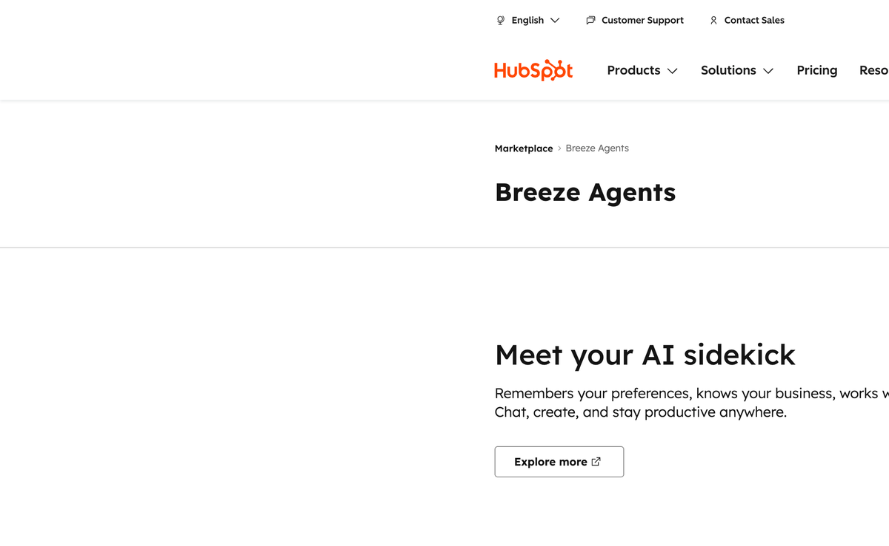
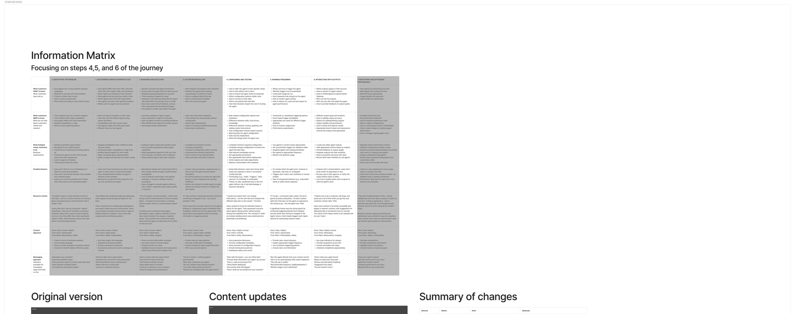
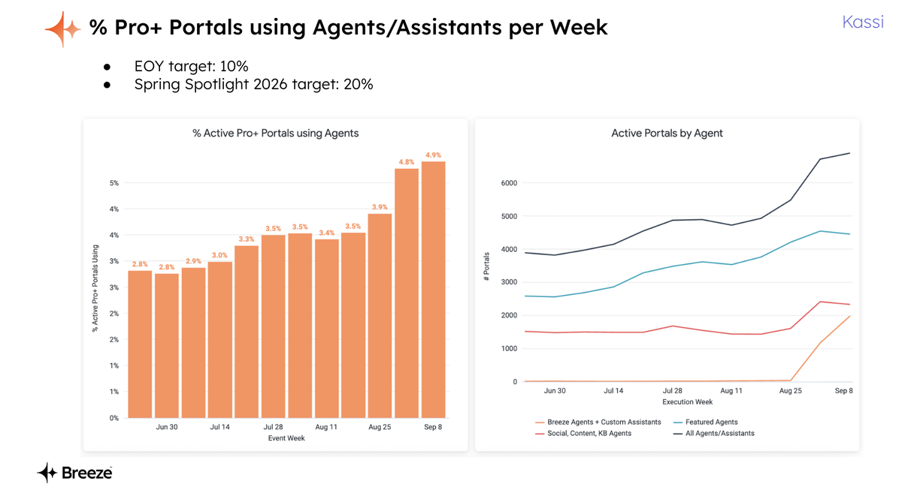
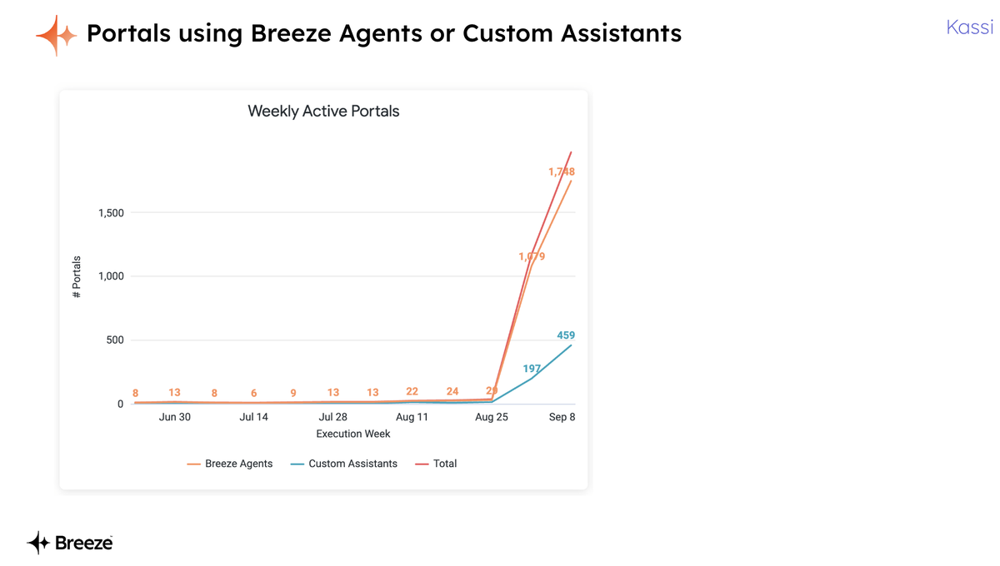
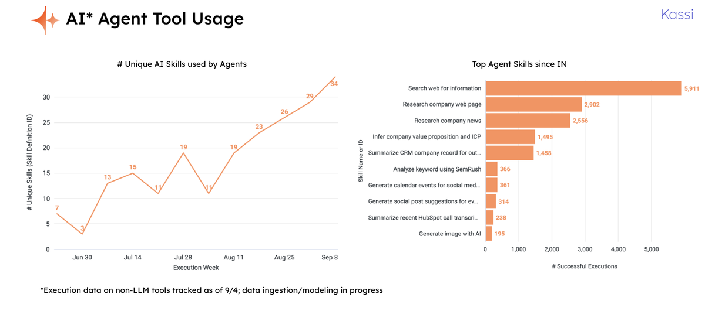

Context
A new product area with no established content patterns.
In early 2025, I joined the AI Agents team to support its highest-priority objectives. The team was building HubSpot's Agent Builder and Custom Assistant — net-new experiences with no established content patterns, no agreed terminology, and design work fragmented across several workstreams.
The core content challenge was conceptual. Agents, tools, skills, triggers, permissions, and run statuses are all new abstractions for most users. Without clear definitions and consistent naming, the experience would feel incoherent — different names for the same thing in different parts of the product, and no shared mental model for how the pieces fit together.
The work
Concept mapping, naming systems, IA, and a content workflow.
Concept mapping. I led a concept mapping exercise to show how different parts of the agent experience related to each other — how triggers, permissions, and run statuses interact, and how Agent Builder connects to the runtime experience. This reduced design fog by making implicit relationships explicit. The team used it to simplify and align user flows.

The concept definition document — mapping Agent and Skill concepts with their definitions, aspects (triggers, permissions, run statuses), and related metadata across the agent experience.
Naming systems. I defined the core concepts and language for building and editing agents, including naming systems for agents, tools, and skills — and a naming GPT to support teams applying the system consistently. The systems have been used 25+ times. As a result of clearer tool naming, the number of unique tools used by agents grew 5×.
IA across Agent Builder and runtime. I translated fragmented designs into a coherent information architecture across the agent builder and runtime experiences, defining the structure and hierarchy of both views.
AI Experience system content guidelines. I architected the content guidelines behind HubSpot's AI Agents and the Breeze Studio launch at INBOUND — defining the core concepts, flows, and language that structured the whole experience.
GitHub-based content workflow. I set up a GitHub-based workflow that reduced engineering overhead and let the team ship and iterate UI strings quickly via PRs, useful for moving fast on content fixes when broader design work was slower.
Weekly UX critique. I helped establish a weekly UX critique for AI UX teams to raise the visibility of content and terminology issues and strengthen cross-team collaboration.
Marketplace positioning. I took on additional work with the Marketplace team to clarify the positioning of agents versus third-party apps with AI. I set up a working document and collaborated with PDs and UX leaders in Ecosystem to establish core concepts and map the options.

The Breeze Agents section of the HubSpot Marketplace at launch — a new surface whose naming, copy, and positioning I helped define.
"Thanks for enabling this conversation and making the Agents vs AI-Powered Integrations doc. It's helpful to get us aligned."
Ryan West, UX Director, Marketplace
"Thank you Kieran for contributing your experience and expertise to the AI UX Content Design working group this year to produce our new AI Content Design guidelines. This is a stellar resource that helps us communicate clearly and consistently about AI features with our customers!"
Jonathon Colman, Senior Content Design Manager
Research
Testing whether the terminology was working.
I led a multi-study research programme on Agent Builder to test whether Breeze Studio content and terminology were intuitive and supported task completion. Key findings:
- Renaming the nav label from 'Breeze' to 'Breeze AI' raised findability from ~25% to ~85%.
- Renaming 'Agent Builder' raised findability from ~33% to ~95%.
I used those findings to shape concrete product decisions and roadmap changes: clarifying core terms, merging Tools and Knowledge, and improving onboarding across product lines.
I also created the Agents User Journey Information Matrix — a shared governance artefact for how agents are described across product lines. It's now used as a reference across the team to make complex AI workflows more approachable.

The Agents User Journey Information Matrix (top) — covering steps 4, 5, and 6 of the journey. Below: before/after agent builder content updates showing how the matrix translated into concrete copy changes.
Outcomes
Results after the INBOUND launch.
After the Breeze Studio launch at INBOUND 2025:
- Pro+ portals using Agents and Assistants grew from ~3.9% to 4.9% per week.
- The number of unique tools used by agents grew 5×, with tools executed thousands of times.
- The agent and tool naming systems have been used 25+ times across the team.
I also introduced office hours to provide broader content design support without diluting focus on the core work. I ran 6 sessions up to April 2025, with positive feedback from PDs and engineers.

% of Pro+ portals using Agents/Assistants per week — growing steadily post-INBOUND launch, with an EOY target of 10% and Spring Spotlight 2026 target of 20%.

Weekly active portals using Breeze Agents (orange) and Custom Assistants (teal) — steep growth curve post-INBOUND launch.

Tool usage data post-launch — unique AI skills used by agents grew 5× over the launch period. Top skills included company research, web search, and calendar generation, with thousands of successful executions.
What's next
Ongoing content work for AI experiences.
The Breeze Studio launch was the first milestone. The content and terminology systems built for it are continuing to evolve as the product develops.
The Agents User Journey Information Matrix remains a live governance artefact, updated as new product decisions are made.